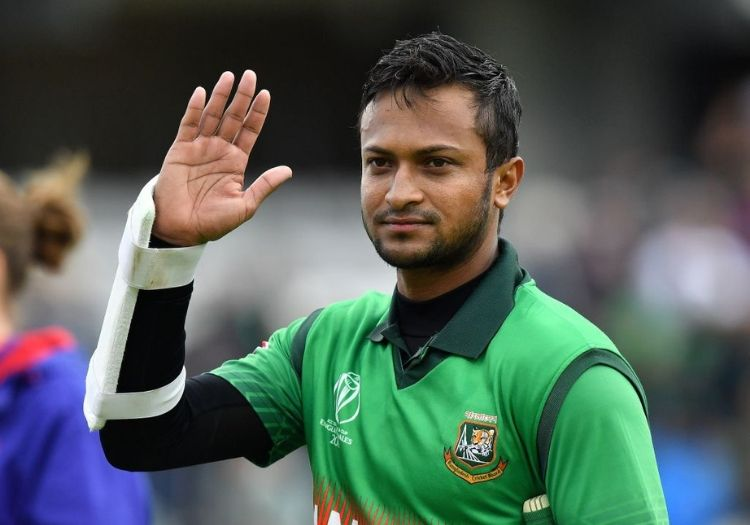
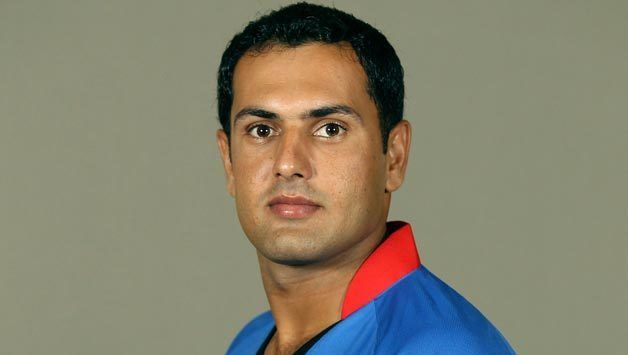
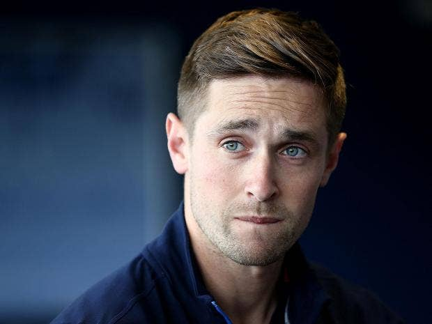

Shakib Al Hasan
Shakib Al Hasan is a Bangladeshi international cricketer and philanthropist. Shakib is considered as one of
cricket's greatest all-rounders.He was ranked as one of the world's most famous athletes by ESPN World Fame
100 in 2019.His aggressive left-handed batting style in the middle order, controlled slow left-arm orthodox
bowling, and athletic fielding has helped him win trophies in top leagues across the world.

Ben Stokes
Benjamin Andrew Stokes is an English international cricketer and vice-captain of the England cricket team in
Test cricket. Stokes was part of the England squad that won the 2019 Cricket World Cup, winning Man of the
Match in the final. In July 2020, Stokes captained the England team for the first time, for the first Test
match against the West Indies.Born in Christchurch, New Zealand, Stokes moved to northern England with his
parents at the age of 12,where he learnt the game and began playing club cricket for local teams. A
left-handed batsman and right-arm fast-medium swing bowler, Stokes has been the top-ranked Test all-rounder
in the world since July 2020.

Mohammad Nabi
Mohammad Nabi is an Afghan cricketer who has captained the side in limited overs matches. Nabi is an
all-rounder, playing as a right-handed batsman and off break bowler. He played a major role in Afghanistan's
rise to the top level of international cricket, playing in both their first One Day International in April
2009 and their first Test match in June 2018. He captained the side during their first appearances in the
2014 Asia Cup and the 2015 Cricket World Cup. Nabi has also played in numerous Twenty20 franchise
tournaments and was the first player from Afghanistan to be selected in the Indian Premier League player
auction.

Chris Woakes
Christopher Roger Woakes is an English cricketer who plays for Warwickshire County Cricket Club and the
England cricket team. He was part of the England squad that won the 2019 Cricket World Cup.
He is a right-handed batsman and a right-arm fast-medium pace bowler. He made his Test match debut against
Australia in the fifth Ashes Test in 2013. He is one of only ten players in Test cricket history to have his
name on both major honours boards at Lords, for scoring a century and taking five wickets in an innings in a
Test on the ground. As a young player at Warwickshire Ashley Giles commented, "if you wanted to clone a
young cricketer, it would be Woakes.

Rashid khan
Rashid Khan Arman is an Afghan cricketer and the current vice-captain of the national team. In franchise
leagues, he plays for Sunrisers Hyderabad in the Indian Premier League (IPL), Adelaide Strikers in
Australia's Big Bash League (BBL), Lahore Qalandars in the Pakistan Super League (PSL) and the Band-e-Amir
Dragons in Afghanistan. He bowls right-arm leg spin and bats right-handed.[1]